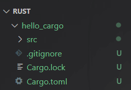

Rust
Hello World!
从打印Hello World入手
1 | fn main() { |
分析这个程序；
- 定义了一个
main函数，main函数是一个特殊的函数，在可执行的Rust程序中，他总是最先运行的代码。 println!调用了一个Rust宏。如果是调用普通函数，则不需要!。当看到符号!的时候，就意味着调用的是宏而不是普通函数
编译和运行是彼此独立的步骤
在运行Rust程序之前，必须使用Rust编译器编译他，输入命令行：rustc xxx.rs。就可以发现在目录下多了一个xx.exe的可执行文件，输入命令行：.\xxx.exe 或 .\xxx即可运行文件
然后就可以在控制台看到打印出的Hello World!
Rust是一种预编译静态类型语言，这意味着你可以编译程序，并将可执行文件送给其他人，他们无需安装Rust就可以运行。与之不同的是例如JavaScript的动态语言，它们只需要一句命令就可以编译和运行程序，但是需要安装相应的环境
Cargo
Cargo是Rust的构建系统和包管理器，它可以为我们处理很多任务，比如构建代码、下载依赖库并编译这些库
使用Cargo创建项目
输入命令行：
cargo new xxx（项目名）即可
例如我们新建一个名为hello_cargo的项目，输入命令行之后就可以在根目录中看到hello_cargo目录，在hello_cargo目录中有一个src目录和一个Cargo.toml文件
在创建项目的同时，还会在项目目录初始化以恶搞git仓库，以及一个.gitignore文件

Cargo.toml文件
这个文件是使用TOML格式，是Cargo配置文件的格式
Cargo.toml文件内容：
1 | [package] |
[package]是一个片段标题，表示下面的语句用来撇脂一个包，接下来的三行是Cargo编译程序所需的配置：项目名称、项目版本以及使用的Rust版本[dependencies]是罗列项目依赖的片段的开始。在Rust中，代码包被称为crates
在src目录下会有一个Cargo为我们生成的main.rs程序，里面实现的一个Hello World程序
构建并运行Cargo项目
方法一：
1 | cargo build |
在使用cargo build命令之后会创建一个可执行文件targrt\debug\xxx.exe
方法二：
1 | cargo run |
cargo run的效果和使用方法一的效果完全相同
cargo check命令
Cargo还提供了一个cargo check命令，它可以快速检查代码确保其可以编译，但并不产生可执行文件
通常
cargo check比cargo build快得多，因为它省略了生成可执行文件的步骤。一般可以在编写代码时持续的进行检查，它可以让你快速了解现在的代码能不能正常编译
发布构建
当项目最终准备好发布时，可以使用cargo build --release来优化编译项目
这会在 target/release 而不是 target/debug 下生成可执行文件。这些优化可以让 Rust 代码运行的更快，不过启用这些优化也需要消耗更长的编译时间
变量与可变性
在Rust中变量默认是不可以改变的，但是仍然可以使用可变变量
变量的默认不可改变是Rust提供的优势之一，让开发者充分利用Rust提供的安全性和简单并发性来编写代码
示例：当试图改变一个变量的值时，rust编译器会报错
1 | fn main() { |
使变量的值可以改变
开发者可以通过在变量名前面添加mut来使其可变
示例：
1 | fn main() { |
常量
常量是绑定到一个名称的不允许改变的值，常量不光默认不能改变，它总是不能改变
声明常量使用const，并且必须注明值的类型
常量只能被设置为常量表达式，而不可以是其他任何只能在运行时计算出的值
示例：
1 | const THREE_HOURS_IN_SECONDS: u32 = 60 * 60 * 3; |
- Rust对常量的命名约定是单词全部使用大写，在单词之间加下划线
- 编译器可以在编译时简单计算一些操作
数据类型
在Rust中，每一个值都属于某一个数据类型。Rust是静态类型语言，也就是说在编译时就必须知道所有变量的类型。
Rust有两类数据类型子集：标量和复合
标量类型
标量类型代表一个单独的值。Rust有四种基本的标量类型：
- 整型
- 浮点型
- 布尔型
- 字符类型
整型
整型又分为有符号和无符号，也就是说有符号的能表示负数和正数，而无符号的只能表示正数。
Rust中的整型
| 长度 | 有符号 | 无符号 |
|---|---|---|
| 8bit | i8 |
u8 |
| 16bit | i16 |
u16 |
| 32bit | i32 |
u32 |
| 64bit | i64 |
u64 |
| 128bit | i128 |
u128 |
| arch | isize |
usize |
每一个有符号的变体可以存储从-2^(n-1)到2^(n-1) - 1在内的数字，这里的n是变体使用的比特位数。也就是说i32可以存储-2^31到2^31 - 1在内的数字。无符号的变体可以存储从0到2^n - 1的数字
Rust的默认整型类型是
i32
其他表现形式：
- 可以使用例如
5u8来指定类型 - 可以使用
_作为分隔符方便读数，例如1_000等价于1000
整型溢出
比如一个u8,他可以存放0到255的值，当给他赋值256时，就会出现整型溢出
在debug模式下，Rust会检查出问题，并panic（程序因错误而退出）
在release模式下，Rust不检测溢出，会进行一种二进制补码回绕的操作。就是比此类型能容纳的最大值还要大的值会回绕到最小值，例如 256 回绕到 0，257 回绕到 1
浮点型
Rust的浮点类型是f32和f64，默认是f64
示例：let x: f32 = 3.2;
布尔型
Rust中的布尔类型使用bool表示，Rust的布尔类型有两个可能的值：true 和 false
示例：let f: bool = false;
字符类型
Rust中的字符类型使用char表示，用单引号声明char字面量，使用双引号声明字符串字面量。
Rust中的char类型的大小为四个字节，代表一个Unicode标量值
示例：
1 | let x = 'x'; |
复合类型
复合类型可以将多个值组合成一个类型。Rust有两个原生的复合类型：元组（tuple） 和 数组
元组类型
元组是一个将多个其他类型的值组合进一个复合类型的主要方式
元组长度固定，一旦声明，其长度不能改变
我们使用包含在圆括号中的逗号分隔的值列表来创建一个元组，元组的每一个位置都有一个类型，每个位置的类型不必相同
示例：
1 | fn main() { |
获取元组中单个值的方法
- 模式匹配
- 解构
解构
1 | fn main() { |
模式匹配
使用.后跟值的索引来直接访问它们
1 | fn main() { |
不带任何值的元组叫做单元元组。这种值和对应的类型都写做
()，表示空值或空的返回类型
数组类型
包含多个值，且每个元素的类型都必须相同的是数组，Rust的数组长度是固定的
示例：
1 | fn main() { |
其他表示方法：
let a: [i32; 5] = [1, 2, 3, 4, 5];在方括号中包含每个元素的类型，后跟分号，再后跟数组元素的数量let a = [3; 5];通过在方括号中指定初始值加分号再加元素个数的方式来创建一个每个元素都为相同值的数组
函数
Rust中使用fn关键字来声明新函数。Rust代码中的函数和变量名风格是所有字母都小写并使用下划线分隔单词
示例：
1 | fn main() { |
Rust不关心函数定义所在的位置，只要函数被调用时出现再调用之处可见的作用域内就行，所以上述代码中say_hi函数定义在main函数之前也可以被调用
参数
在给函数签名中添加参数时，需要声明每个参数的类型
示例：
1 | fn main() { |
语句和表达式
在Rust中语句和表达式是有区别的，这不同于其他语言
语句（Statements）：执行一些操作但不返回值的指令
表达式（Expressions）：计算并产生一个值
示例：一个赋值语句let x = 6;就是一个语句、函数定义也是语句
语句不返回值，所以在Rust中
let x = y = 6;的写法是不合法的
表达式可以是语句的一部分
语句let x = 6;中的6是一个表达式，他计算出的值是6。
函数调用也是一个表达式、宏调用也是一个表达式、用大括号创建的一个新的块作用域也是一个表达式
注意：
表达式的结尾没有分号，如果在表达式的结尾加上分号，它就变成了语句，而语句不会返回值
函数返回值
需要声明返回值的类型
声明方法：在箭头->后声明它的类型
示例：
1 | fn five() -> i32 { |
在Rust中，函数的返回值等同于函数体最后一个表达式的值
使用return关键字修饰指定值，可以从函数中提前返回
大部分函数隐式的返回最后的表达式
示例：
1 | fn num_plus(x: i32) -> i32 { |
上述代码可以正常执行并打印结果，但是如果在x + 1后面加上分号;，那么就会报错
在前面我们说过，表达式的结尾是没有分号的，加了分号之后x + 1;就变成了语句，不会返回值。
但是num_plus函数又要求返回一个类型是i32的值，所以会报错
if表达式
在Rust中的if表达式和JS等语言的区别在于：
- 判断条件不需要用括号包裹
- 判断条件必须显式的使用
bool值，它能自动将非布尔值转化为布尔值
示例：
1 | fn main() { |
在let语句中使用if
因为if是一个表达式，我们可以将它在let语句的右侧使用
示例：
1 | fn main() { |